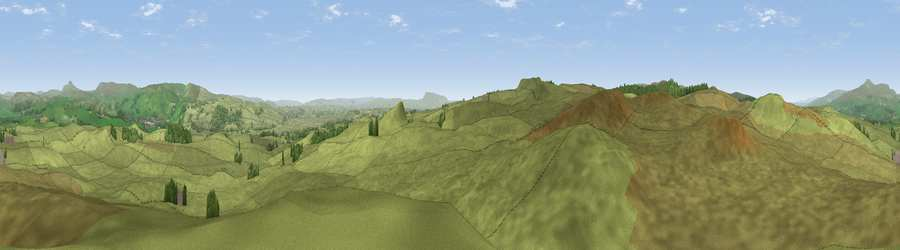

Viewpoint near Rathmell
#11657 in England · top 26% of its area beats it · near RathmellThe view, rendered

A 360° render of this exact spot computed from the terrain model, tree cover and land cover — summer colours, afternoon light, calibrated against photographs of famous viewpoints. Real trees, hedges and buildings will differ in detail.
The panorama
Grey silhouette: terrain skyline in each direction (720 bearings, Earth curvature and refraction included). Dashed green: skyline with trees (+15 m) and buildings (+8 m) as obstacles. Blue strip: how far the ground is visible on each bearing.
Where the view opens
Wedge length = distance to the farthest visible ground on that bearing (vegetation-aware). Rings at 10, 25 and 50 km.
What fills the view
97% grassland · 3% woodland
Angular shares of the visible panorama (visual magnitude), not map area. Landscape diversity 0.07 (0–1 Shannon).
Key numbers
More beautiful places nearby
The staircase of upgrades: each row has a higher view potential than everything closer. Driving times are estimates from straight-line distance, calibrated against real road routing — check an actual route before setting out.
| Place | Direction | Drive | Score |
|---|---|---|---|
| Viewpoint near Rathmell | SSE · 1 km | ~3 min | 61.5 |
| Viewpoint near Rathmell | WNW · 2 km | ~5 min | 62.9 |
| Viewpoint near Tosside | SW · 2 km | ~5 min | 70.6 |
| Whelpstone Crag | SW · 2 km | ~6 min | 71.7 |
| Viewpoint c9214_7456 | W · 5 km | ~10 min | 72.4 |
| Warrendale Knotts | ENE · 7 km | ~14 min | 73.7 |
| Hailshowers Fell | W · 7 km | ~15 min | 73.8 |
| Kirkby Fell | ENE · 10 km | ~20 min | 74.5 |
54.04514, -2.34854 · source: screening · position refined by local search. Computed location — check access rights before visiting.